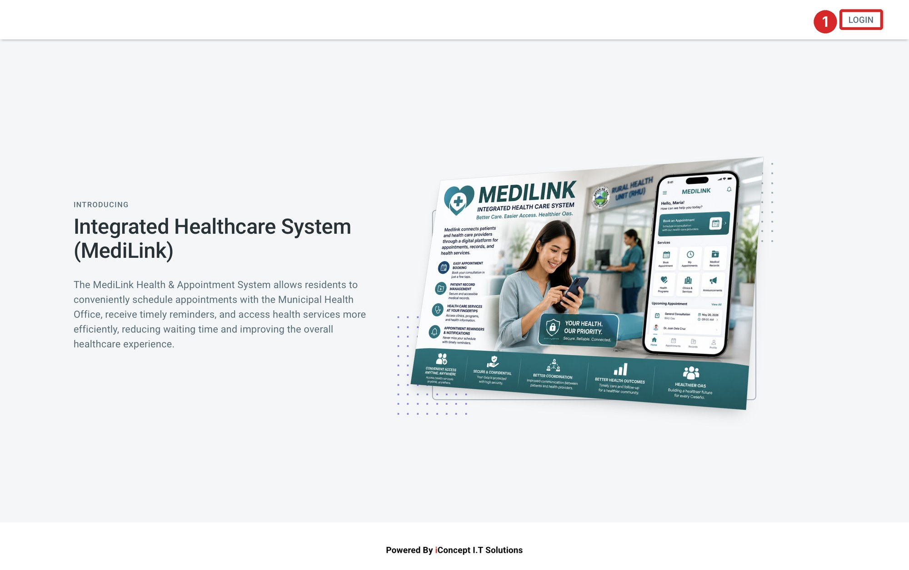
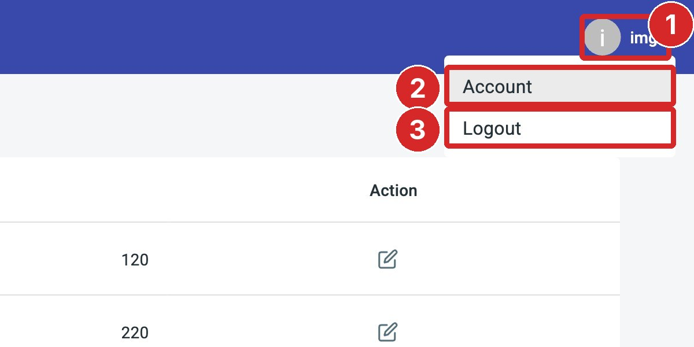
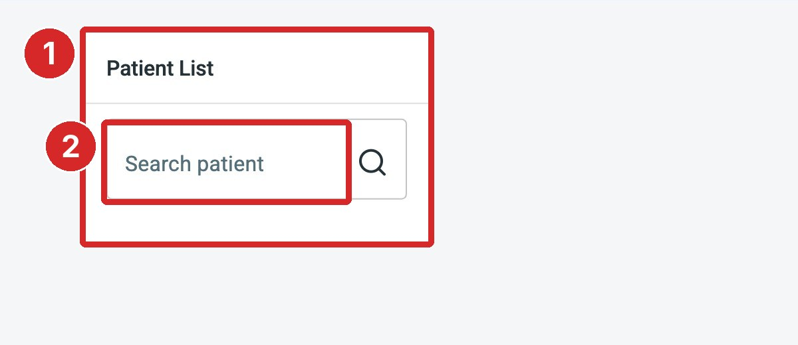

MediLink, the Integrated Healthcare System of the Municipality of Oas, connects patients, doctors and the clinic's service units. The Imaging role is used by the imaging unit (for example ECG and X-ray). As Imaging staff you can:
find patients with imaging requests;
keep the list of imaging tests and their rates up to date; and
view the imaging transactions, open a result and print it.
IMPORTANTSample data only. All names, tests, rates, results and contact details shown in this manual are sample data used for training. They are not real records.
NOTE Screens in this manual were captured from the live system on 24 October 2026 with an imaging account.
1.2 Signing in
Open a web browser and go to medilink.oas.lguapp.com.
On the MediLink home page, click LOGIN at the top right (Figure 1.1).
Sign in with the imaging account given to you by the system administrator.
MediLink opens the Patients page (Section 2).

Figure 1.1. The MediLink home page.
1LOGIN button
1.3 The Imaging screen
Figure 1.2. The Imaging screen.
1Top bar2Your photo, name and email3Main menu4Account menu5Work area
Part
What it does
1 Top bar
Shows that you are signed in with the Imaging role.
2 Your profile
Your photo, name and email.
3 Main menu
Patients (Section 2), Test (Section 3) and Report (Section 4). The page you are on is shown in blue.
4 Account menu
Click it for Account and Logout (1.4).
5 Work area
The content of the page you opened.
1.4 Account menu and signing out

Figure 1.3. The account menu at the top right.
1Account menu2Account3Logout
Click Account to change your profile, email or password (Section 5).
Click Logout to sign out. Always sign out when you leave a shared computer.
SECTION 2
Patients
The Patients page is where imaging staff find the patients they need to serve.
Click Patients in the main menu. Type a patient's name in Search patient to find the patient in the Patient List.

Figure 2.1. The Patient List.
1Patient List2Search patient
NOTE When this manual was prepared the Patient List was empty, and searching (for example David) returned no patients. Doctors request imaging tests from the patient record (Imaging › UNSAVED › ADD TEST › CONFIRM ALL in the Doctor manual); no such request was pending, so the steps for opening a patient and entering a result could not be captured.
SECTION 3
Imaging Tests
The Test page lists the imaging tests the unit offers and their rates. Doctors choose from this list when they request a test.